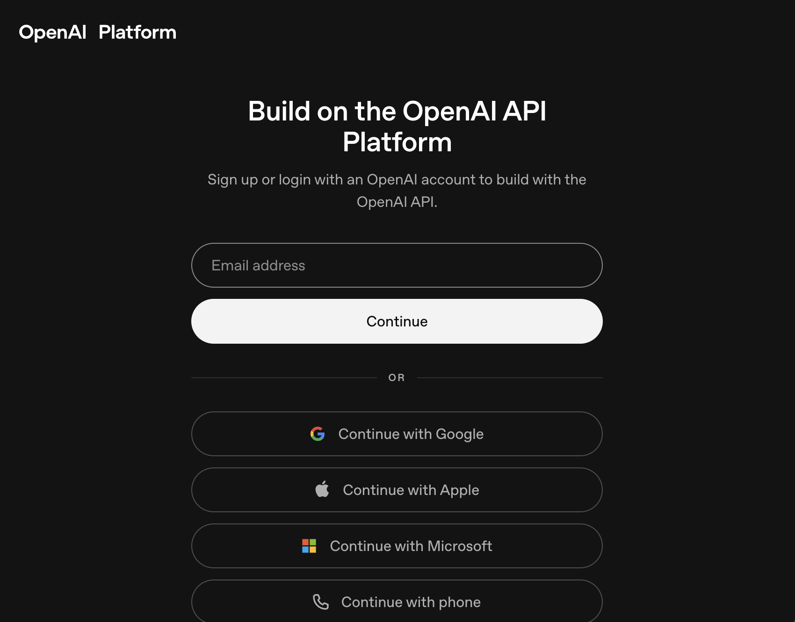
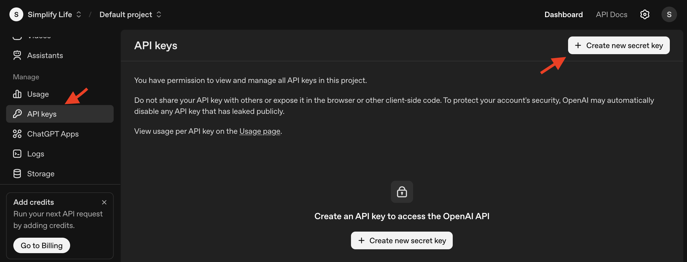
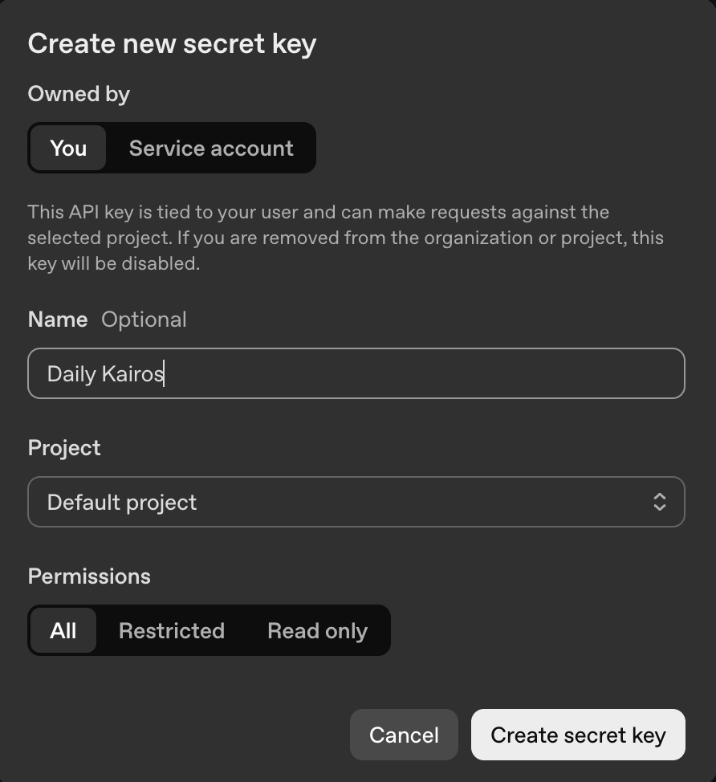
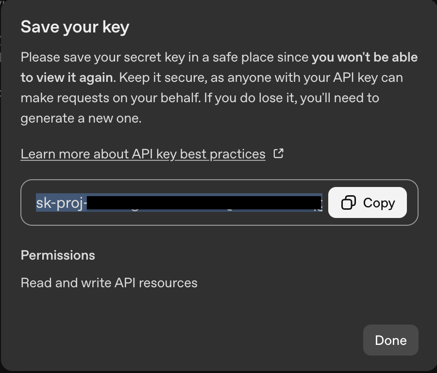
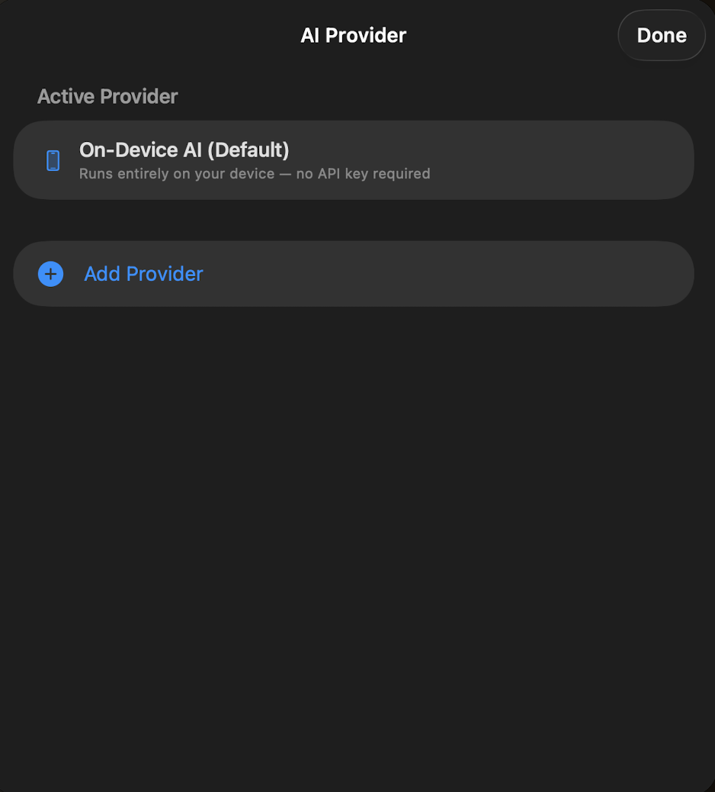
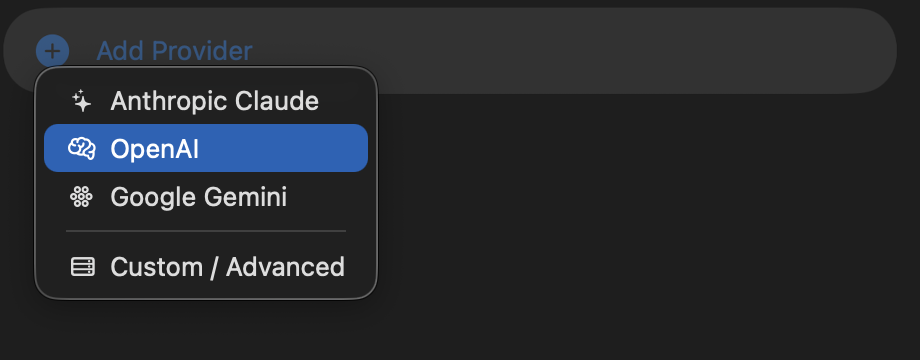
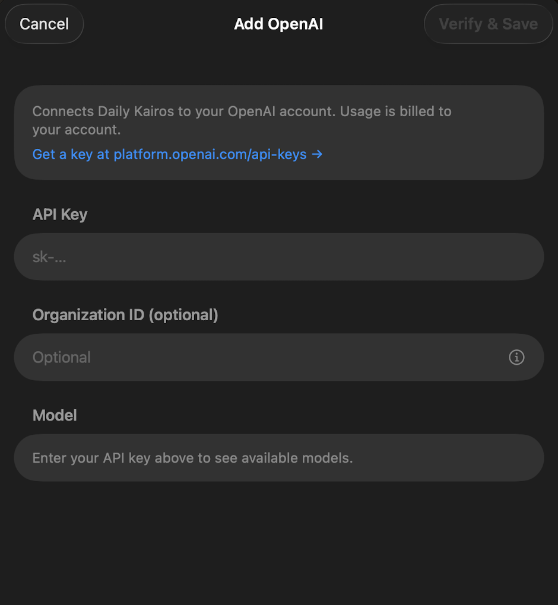
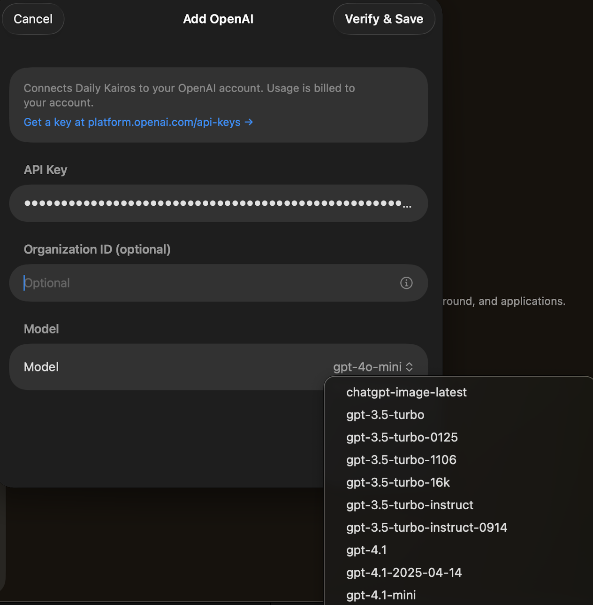
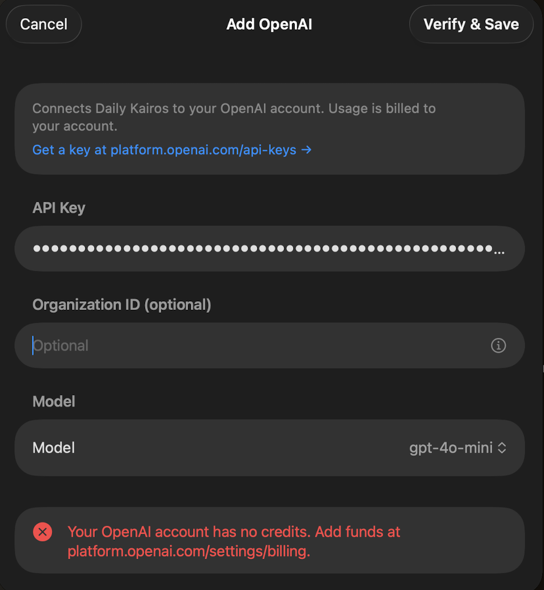
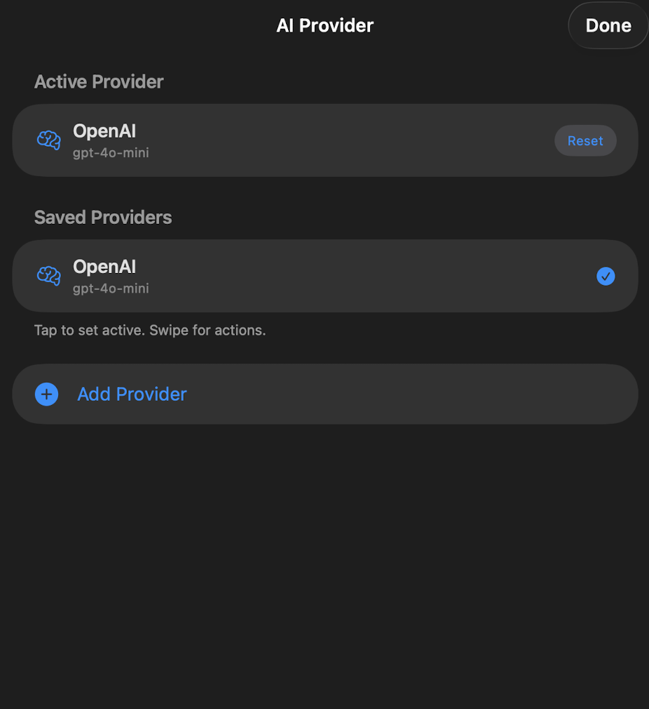

Setup · AI Provider
OpenAI
Connect Daily Kairos to OpenAI to use GPT-4o and other OpenAI models for generating Bible reflections. You'll need an OpenAI account and an API key.
Step 1 — Create an OpenAI API key
Go to platform.openai.com and sign in. If you don't have an account yet, click Sign up and follow the prompts.

Once logged in, click API keys in the left sidebar — or navigate directly to platform.openai.com/api-keys. Click + Create new secret key.

In the dialog, set the name to Daily Kairos, leave Permissions as All, and click Create secret key.

Click Copy to copy your key — then click Done. This is the only time OpenAI will show you this key. If you close without copying, you'll need to create a new one.

Step 2 — Enter the key in Daily Kairos
Open Daily Kairos, tap the Settings icon (⚙️), then tap AI Provider. You'll see the provider screen with On-Device AI as the default. Tap Add Provider.

A menu appears listing the available providers. Select OpenAI.

The Add OpenAI configuration screen opens. Paste your API key into the API Key field (starting with sk-). Organization ID is optional — leave it blank unless your OpenAI account requires it.

Once your key is entered, tap the Model field. A dropdown will load the list of models available on your account — select the one you'd like to use (e.g. gpt-4o-mini for a good balance of speed and quality).

Tap Verify & Save in the top-right corner. Daily Kairos will test your key and save the configuration if everything checks out.
If there's a problem — such as insufficient credits or an incorrect key — you'll see an error message at the bottom of the screen.

If the verification succeeds, OpenAI is saved and set as your active provider. You'll be returned to the AI Provider screen, which will show OpenAI as the active selection.
